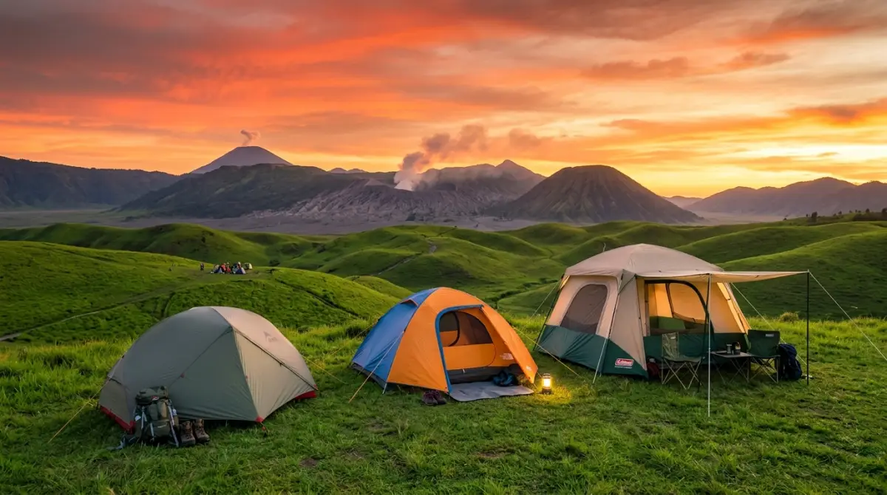

Inovasi tenda camping terbaru 2026 hadir lebih ringan, lebih tangguh, dan lebih cerdas — untuk petualangan alam yang lebih berkesan.
Inovasi tenda camping terbaru 2026 hadir lebih ringan, lebih tangguh, dan lebih cerdas — untuk petualangan alam yang lebih berkesan.
Sering merasa akhir pekan cuma numpang lewat buat balas dendam tidur setelah Senin sampai Jumat dihajar deadline dan revisi bos yang tiada henti? Rutinitas harian memang bikin penat.
Tapi, bayangkan teman-temanmu asyik menyeruput kopi hangat di depan tenda sambil melihat sunrise Gunung Prau, sementara kamu masih rebahan di kasur dengan rasa lelah yang tak kunjung hilang. Sayang banget, kan? Momen pelarian sesaat di alam bebas ini terlalu berharga untuk dilewatkan, atau justru dirusak oleh perlengkapan yang salah. Tenda bocor atau frame patah pas badai itu rasanya jauh lebih horor daripada laptop nge-hang saat dokumen belum di-save!
Supaya petualanganmu bebas drama dan benar-benar jadi ajang healing, berinvestasi pada "rumah sementara" yang tangguh adalah kunci. Kalau kamu berencana upgrade alat tempurmu tahun ini, simak ulasan dan rekomendasi tenda camping terbaru berikut agar liburan berhargamu tak berakhir jadi penyesalan di kemudian hari.
Evolusi Tenda Camping Terbaru: Lebih Ringan, Lebih Tangguh
Dunia perlengkapan outdoor berkembang pesat. Kalau dulu membawa tenda rasanya seperti memanggul beban kerja akhir bulan — berat dan bikin sakit punggung — sekarang ceritanya sudah beda. Inovasi teknologi pada material pembuat tenda di tahun 2026 ini benar-benar memanjakan kita.
Material Ultralight Tanpa Mengorbankan Durabilitas
Dulu, ada mitos kalau tenda ringan pasti gampang robek, dan tenda kuat pasti beratnya minta ampun. Sekarang, para produsen menggunakan material Silnylon (Silicone Nylon) atau Dyneema generasi terbaru yang bobotnya bisa dipangkas drastis tapi punya daya tahan sobek (tear strength) yang luar biasa. Ibarat karyawan teladan, material ini kerjanya efisien, nggak banyak makan tempat, tapi tahan banting menghadapi tekanan.
Teknologi Sirkulasi Udara dan Perlindungan Cuaca
Satu masalah klasik saat camping di Indonesia adalah kondensasi. Kamu bangun pagi, dan bagian dalam tendamu basah kuyup karena embun napasmu sendiri. Nah, inovasi tenda masa kini sudah dilengkapi dengan sistem ventilasi cross-breeze pintar dan material jaring (mesh) no-see-um yang lebih rapat tapi tetap breathable. Selain itu, lapisan penahan sinar UV (UV protection) di flysheet semakin umum ditemui, jadi kamu nggak akan merasa seperti di dalam oven saat matahari sedang terik-teriknya.
Kategori Tenda Sesuai Gaya Liburanmu
Nggak semua orang punya gaya liburan yang sama. Ada yang suka jalan sendiri nembus hutan lebat, ada juga yang cuma mau gelar tenda di pinggir danau bareng keluarga sambil buka bagasi mobil (campervan style). Makanya, memilih tenda itu mirip dengan memilih divisi di kantor; harus sesuai dengan kapasitas dan skill yang kamu butuhkan.
Tenda Ultralight: Sobat Pendaki Solo dan Fast Packer
Kalau kamu tipe backpacker yang suka tek-tok (naik-turun gunung dalam waktu singkat) atau pendaki solo, tenda ultralight (UL) adalah jawaban mutlak. Bobotnya rata-rata di bawah 1,5 kg untuk kapasitas dua orang. Tenda tipe ini biasanya menggunakan trekking pole sebagai tiang penyangga utamanya, jadi kamu bisa menghemat ruang di dalam carrier. Memang harganya relatif sedikit lebih mahal, tapi percayalah, lutut dan pundakmu akan sangat berterima kasih di masa depan.
Tenda Pop-Up Otomatis: Solusi Anti-Ribet buat Keluarga
Bawa anak kecil camping itu seru, tapi kalau harus merakit frame tenda setengah jam sambil anak rewel minta makan? Bikin stres! Untuk kaum keluarga atau camper ceria, tenda pop-up otomatis adalah penyelamat. Sistemnya mirip payung; tinggal tarik tuas di bagian atas, dan tenda langsung berdiri kokoh dalam hitungan detik. Kepraktisan ini membuatmu punya lebih banyak waktu untuk menyalakan api unggun atau memanggang sosis bersama keluarga.
Tenda Glamping: Estetika Maksimal untuk Camper Ceria
Bagi kamu yang mengutamakan konten media sosial yang aesthetic, tenda bergaya glamping (glamorous camping) bentuk bell tent atau cabin sedang naik daun. Materialnya biasanya campuran katun (T/C atau Tetoron Cotton) yang adem banget di siang hari. Bentuknya luas, bahkan kamu bisa berdiri tegak di dalamnya. Memang bobotnya super berat dan hanya cocok untuk camping di area yang mobil bisa masuk (drive-in camp), tapi kenyamanannya sepadan dengan hotel bintang tiga.

Tenda camping modern 2026 hadir dalam berbagai kategori — dari ultralight untuk pendaki solo hingga bell tent mewah untuk pengalaman glamping yang memukau.Review Deretan Tenda Camping Terbaru 2026
Berdasarkan pengamatan tren pasar outdoor dan spesifikasi teknis dari berbagai pabrikan tahun ini, ada beberapa lini produk yang sangat menonjol. Berikut ulasan singkatnya:
1. Eiger ‘AeroLight 2P’ (Kategori Ultralight)
Eiger merilis seri penyempurnaan dari lini ultralight mereka. AeroLight 2P hadir dengan material 20D Silnylon dan frame aluminium dac featherlite yang sangat ringan.
- Kelebihan: Bobot hanya sekitar 1,2 kg. Tahan angin kencang berkat desain aerodinamisnya.
- Kekurangan: Ruang gerak di dalam cukup sempit untuk dua orang dewasa berpostur besar, lebih nyaman digunakan layaknya tenda 1.5P.
2. Naturehike ‘Village 5.0 Auto’ (Kategori Pop-Up Keluarga)
Naturehike kembali menggebrak pasar dengan tenda kabin otomatisnya. Desainnya menyerupai rumah kecil dengan jendela-jendela besar di setiap sisi.
- Kelebihan: Setup di bawah 3 menit. Sirkulasi udara juara, dan sudah dilengkapi skirt (rompi bawah) untuk menahan angin malam masuk ke dalam tenda.
- Kekurangan: Saat terlipat, dimensinya sangat panjang (hampir 1 meter), sehingga memakan banyak space di bagasi mobil.
3. Consina ‘CottonCamp 4’ (Kategori Glamping)
Consina ikut meramaikan tren glamping dengan material poly-cotton yang breathable.
- Kelebihan: Sangat sejuk di siang hari, tidak pengap sama sekali. Tampilannya sangat elegan dengan warna-warna bumi (earth tone) yang hangat.
- Kekurangan: Butuh perawatan ekstra. Jika basah terkena hujan, tenda harus benar-benar dijemur sampai kering sempurna sebelum disimpan agar tidak berjamur.
Panduan Membeli Tenda untuk Cuaca Indonesia
Membeli perlengkapan outdoor itu butuh kecermatan. Jangan sekadar fomo lihat barang bagus di feed Instagram, tapi pas dipakai di gunung lokal malah bocor lebat. Cuaca tropis di Indonesia itu cukup ekstrem; siang bisa sangat panas terik, dan malam bisa badai hujan berangin. Perhatikan tiga hal vital ini:
1. Perhatikan PU Rating (Waterproof Index)
PU Rating atau Polyurethane Rating adalah indikator seberapa tahan material tendamu menahan tekanan air. Untuk cuaca Indonesia yang curah hujannya tinggi, carilah tenda camping terbaru dengan tingkat PU minimal 2000mm pada flysheet (lapisan luar) dan 3000mm pada alas (floor). Kalau di bawah itu, siap-siap saja mengepel genangan air di dalam tenda saat badai datang.
2. Material Frame (Tiang Penyangga)
Tinggalkan frame fiberglass kalau kamu berencana naik ke gunung di atas 2000 mdpl. Fiberglass mudah pecah atau retak saat suhu terlalu dingin atau saat menahan angin kencang badai. Beralihlah ke frame aluminium alloy (minimal seri 7001). Kuat, lentur, dan jauh lebih awet. Ibarat fondasi karier, pilih yang solid dari awal biar nggak gampang tumbang kena masalah.
3. Kapasitas Nyata (Real Capacity)
Aturan tak tertulis dalam dunia pendakian: kapasitas tenda pabrikan itu dihitung layaknya ikan sarden di dalam kaleng. Kalau di kemasan tertulis "Kapasitas 4 Orang", percayalah itu artinya 4 orang tidur telentang rapat tanpa ada ruang untuk ransel. Jika kamu kemah berempat dan bawa banyak barang, belilah tenda kapasitas 5 atau 6 orang agar bisa tidur dengan nyaman tanpa harus meringkuk bersentuhan.
"Perlengkapan yang mumpuni bukan soal adu pamer merek, melainkan soal menghargai kenyamanan dan keselamatan dirimu sendiri di alam terbuka."
— Prinsip Petualang BijakPenutup
Pada akhirnya, hidup ini terlalu singkat jika hanya dihabiskan untuk mengejar target KPI perusahaan atau bergelut dengan kemacetan kota setiap hari. Alam bebas selalu punya cara magis untuk mengembalikan kewarasan kita, mereset ulang pikiran yang ruwet, dan memberikan ketenangan yang tidak bisa dibeli di mal manapun.
Memilih perlengkapan yang mumpuni bukan soal adu pamer merek, melainkan soal menghargai kenyamanan dan keselamatan dirimu sendiri di alam terbuka. Jangan tunggu sampai punggungmu terlalu tua atau jadwalmu semakin mustahil untuk sekadar tidur beralaskan matras di bawah taburan bintang. Mulailah rencanakan liburanmu dari sekarang, siapkan alat terbaikmu, dan ciptakan cerita petualangan yang akan terus kamu ingat saat hari tuamu nanti. Sampai jumpa di jalur pendakian!
FAQ — Tenda Camping Terbaru 2026